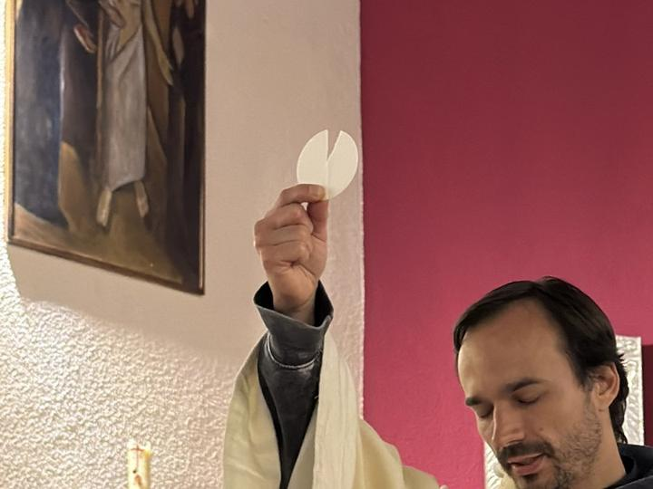
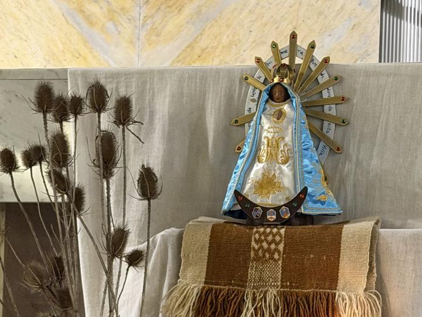
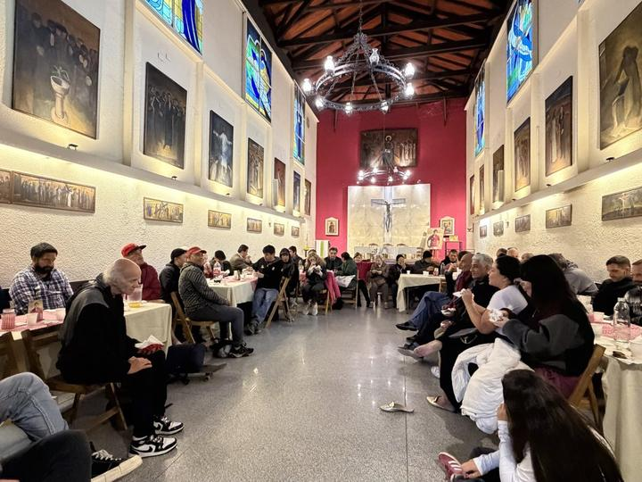
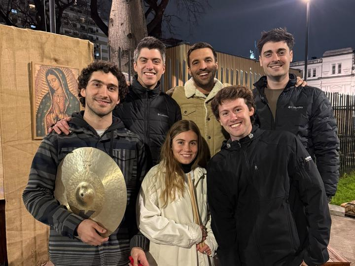
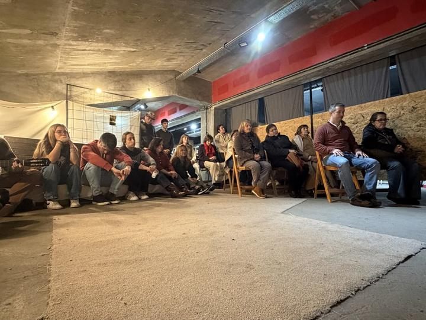
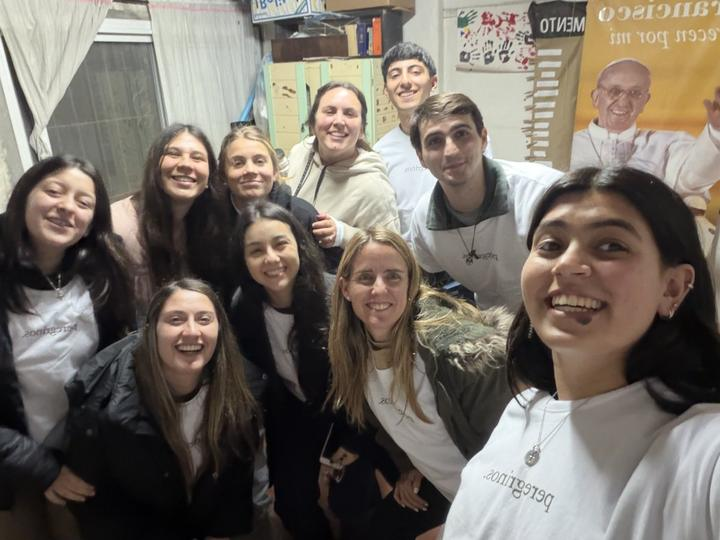

Casa de oración
Donde los sedientos encuentren el agua viva de Dios, en la belleza de nuestra capilla silenciosa y en la calidez de nuestras celebraciones.
Una capilla de jóvenes en medio de la ciudad.
nuestra vocación
Somos una pequeña capilla de 150 años ubicada en el centro de la Plaza Houssay, en medio de numerosas universidades: las facultades de Medicina, Economía, Farmacia y Odontología de la Universidad de Buenos Aires, entre muchas otras.
Fuimos soñados especialmente para acompañar a la multitud de jóvenes que por acá estudian, trabajan, buscan, peregrinan… sirviéndolos hacia su encuentro con Dios y su Reino de alegría y caridad.
Pertenecemos a la Arquidiócesis de Buenos Aires como parroquia personal: una comunidad establecida no por un territorio delimitado sino por un ámbito pastoral personalizado, en nuestro caso, el juvenil.

Enamorados de Jesús, buscamos vivir juntos su Buena Noticia en medio de la ciudad
Donde los sedientos encuentren el agua viva de Dios, en la belleza de nuestra capilla silenciosa y en la calidez de nuestras celebraciones.
Empujados a compartir la alegría de la fe en Jesús, aprendiendo a servir generosamente en la realidad concreta de cada uno.
Servimos a los jóvenes de modo preferencial pero no exclusivo: una familia misionera junto a niños, adultos y ancianos, cuya fe rejuvenecida disfrutamos todos.
nuestra misión
Pensamos nuestras actividades desde las cuatro dimensiones vitales de la Iglesia.
Espacios y actividades para celebrar, crecer y perseverar en la fe.



Misas, adoraciones, confesiones, bautismos, casamientos y más.
Grupo de universitarios de 18 a 23 años.
Martes por medio
Espacio de formación para madurar en la fe, para jóvenes y adultos.
Todo el año
Un encuentro para compartir una etapa del camino del peregrino.
Último miércoles de cada mes
Espacio de alabanzas, Vía Crucis (Cuaresma) y Vía Lucis (Pascua).
Todo el año
Espacio para matrimonios jóvenes y noviazgos.
Todo el año
Espacio para jóvenes de 20 a 30 años y la comunidad, para profundizar la Semana Santa.
Marzo / abril
Grupos de vida.
Todo el año
Para chicos de 1.º a 5.º año del secundario.
Todo el año
Espacios y actividades solidarias al servicio de los que más lo necesitan.



Espacio para compartir la fe y vivencias con nuestros hermanos en situación de calle.
Sábados al mediodía
Espacio para jóvenes varones mayores de 18 que quieran vivir una caridad concreta visitando el penal de menores.
Sábado por medio
Voluntariado en el Hospital de Clínicas.
Todo el año
Espacio para jóvenes de 23 a 35 años que busquen misionar de una manera distinta y madura.
Enero
Trabajo comunitario en el jardín, entre otros.
Todo el año
Misión abierta a toda la comunidad, para jóvenes y adultos, en una localidad de la provincia de Buenos Aires.
Durante el año
Espacios y actividades que motivan nuestra acogida, participación y organización comunitaria.



Fiestas patronales, cena de fin de año, peñas y festa junina.
Todo el año
A Luján y a la Mariápolis.
Octubre / noviembre
Consejos, servidores de la Comunión y de la Hospitalidad.
Todo el año
Dos encuentros para compartir con los padrinos las vivencias y avances de nuestra comunidad.
Marzo / octubre
Espacio para estudiar juntos y encontrarnos con Dios.
Todo el año
Espacios y actividades para salir al encuentro de quienes no conocen a Dios, están alejados o iniciando su camino de fe.



Espacio de formación para jóvenes, especialmente para la Confirmación.
Mayo / junio
Retiro de impacto para jóvenes que quieran tener un triple encuentro: con Jesús, con ellos mismos y con los demás.
Próximamente
Un curso para buscar el sentido de la fe.
De marzo a julio
Día de Carlo Acutis (el 12 de cada mes), misa de brasileros, misa de universitarios y novenas.
Todo el año
Bautismos
[Completar: fechas y charlas preparatorias]
Confirmación
La preparación se hace en Catequesis Jóvenes.
Matrimonios
[Completar: requisitos y anticipación]
Nos gusta cuidar y transmitir en todo lo que hacemos un espíritu creativo, profundo y misericordioso.
Convencidos de que Dios es siempre nuevo y de que Él hace nuevas todas las cosas, nos animamos a renovar estructuras, estilos y lenguajes para testimoniar una Iglesia más viva y un Evangelio más cercano.
Porque no podemos callar lo que hemos visto y oído, nos animamos a un vínculo muy profundo con Dios y con los demás, cultivando la interioridad y la fraternidad por encima de la indiferencia y la superficialidad.
El amor de Dios da siempre el primer paso. Así intentamos amar como Él, poniéndonos al servicio de todos, especialmente de los jóvenes y de los pobres, entregándonos en la santidad de cada día y en los que más sufren.
te esperamos
Misas, adoración eucarística, confesiones y capilla abierta.
LunesLa capilla permanece cerrada.
Día de Carlo AcutisEl 12 de cada mes, en las misas de 12.15 y 19.30, con bendición especial.
Secretaría parroquialHorario: [completar]. Bautismos, matrimonios, certificados y consultas.